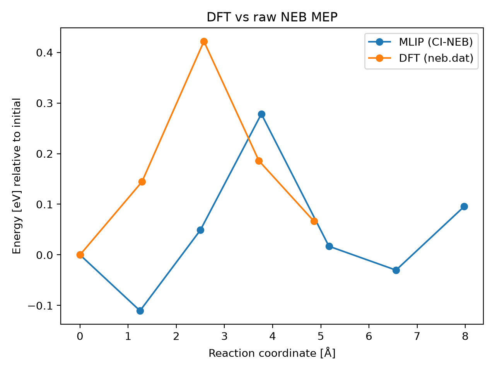

DFT vs raw NEB MEP
Metrics
- mlip_barrier_eV: 0.2783583574972681
- mlip_deltaE_eV: 0.09554995305336433
- dft_barrier_eV: 0.42191
- dft_deltaE_eV: 0.066483
- energy_RMSE_eV: 0.19937621940172665
- Mlip dt: 1.168141592920354
- Mlip_d3 dt: 1.3846153846153846
- mlip_d3 climb dt: 1.4181818181818182
- Total NEB time (s): 324.0
- max_F_perp_eV_per_A: None
- force_RMSE_eV_per_A: None
- max_force_err_eV_per_A: None
- model: raw
- raw_dir: /home/uqctwee1/PhD_wsl/projects/mlip/mlip-workflows/neb_tests/g_CsPbI2Br/VI0/Pb57/8d-I4c/results_7imgs/raw
- dft_neb_dat: /home/uqctwee1/PhD_wsl/projects/mlip/mlip-workflows/neb_tests/g_CsPbI2Br/VI0/Pb57/8d-I4c/dft_neb.dat
Plot
